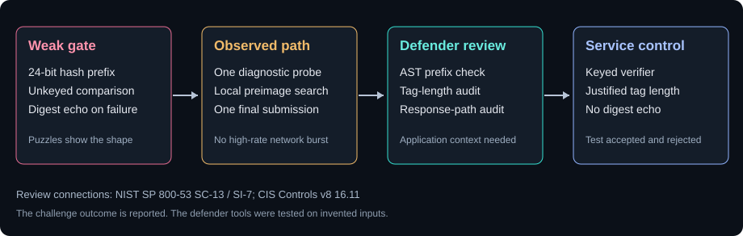

Abacus / Cyber Ops / CTF Writeups / Crypto / Six Hex Characters and a Wrong First Guess
Six Hex Characters and a Wrong First Guess
My first candidate was wrong. The rejection told me which hash the service was using.
Summary
The challenge. Identify the hash behind a fresh 24-bit prefix and return a matching plaintext before the service's input timeout.
What I did. I read the full banner, tested an MD5 candidate, compared the service's echoed digest with local algorithms, and searched SHA-1 candidates offline.
The result. The retained solve record reports a SHA-1 match followed by a service response saying "Collision found" and returning the flag.
The limit. The live socket transcript, original scripts, and acceptance receipt were not available for replay. The math and defensive examples were checked locally; the final service response remains reported.
Case details
| Field | Value |
|---|---|
| Category | Crypto / interactive TCP service |
| Difficulty | Medium |
| Tags | SHA1, truncated hash, preimage brute-force, oracle fingerprinting, algorithm confusion, socket scripting |
| Status | Solved-Verified in the retained challenge account |
| Goal | Find any plaintext whose service hash begins with a fresh six-hex-character target |
| Reported result | SHA-1 identified from a rejection echo; one matching plaintext accepted and a flag returned |
| Independently checked here | 24-bit search probability, local hash-loop timing, and defensive proof-of-concept behavior |
| Evidence limit | No live transcript, original script files, or platform receipt to replay |
Defensive proofs of concept for adapting this case to real environments: browse the GitHub artifacts folder.
1. Problem Statement and Threat Scenario
The service presented a new six-character hexadecimal target on each TCP connection. It wanted any plaintext whose hash began with those six characters. The challenge record describes an approximately 30-second idle input timeout and a 200,000-guess budget. I had to identify the hash algorithm and get a matching input back before the session went idle.
This was a puzzle service. The record does not establish an adversary attacking a real network. Its design still resembles a risk I would care about in production: a verifier checks only a short part of a digest and assumes that comparison is difficult to satisfy. Here the compared value was 24 bits, even though the underlying SHA-1 digest is 160 bits. The server's rejection path also gave away a computed digest for a chosen input. That feedback made the algorithm easy to fingerprint.
I have the retained solve notes and their code excerpts, but no socket capture or acceptance receipt. They report an accepted plaintext and a returned flag. The rest of this page keeps that outcome as reported while separating the parts I can check locally: the search math, Python behavior, and defensive review tools.
2. Techniques, Tooling, and Actions Taken
I started by connecting with a Python socket and reading the banner. A single immediate recv() had captured only part of it, so the recorded script paused briefly and read again. The target came from a regex anchored to the banner's hex chars): phrase. That gave me six lowercase hex characters, not a full digest.
The prompt's talk of "known collisions" nudged me toward MD5. I searched for a plaintext whose MD5 digest began with the target and submitted it. The service rejected the candidate and echoed the hash it had computed for the exact submitted input. I compared that echo with local MD5, SHA-1, SHA-2, SHA-3, and BLAKE2 results. SHA-1 matched. The MD5 assumption went in the bin after one live probe. Expanding the MD5 search would only have spent time on the wrong function.
The target changed when I reconnected. I then searched sequential ASCII integers against SHA-1 locally and submitted a matching plaintext once. The retained account reports Collision found followed by the flag. It does not include the original connection transcript, so I cannot independently repeat that last response.
| Step | What I tried | Observation and decision |
|---|---|---|
| ST.1 | Python socket and banner parser | Read a fresh six-hex target after allowing for a split banner |
| ST.2 | MD5-derived candidate | Rejected; the service echoed its own digest for my input |
| ST.2a | Compare local MD5 with echo | Mismatch; abandon MD5 as the service algorithm |
| ST.3 | Hash that known input under common algorithms | SHA-1 was the unique local prefix match in the recorded test |
| ST.4 | Search sequential integers under SHA-1 | Reported matching plaintext found on a fresh connection |
| ST.5 | Submit one plaintext | Reported acceptance and flag |
I also had mundane tooling trouble. Netcat was absent on the Windows setup, and an interactive REPL or IDE was a poor fit for the socket exchange. A short Python script gave me control over receive timing and the one submission I actually needed. Those detours belong in the record because they explain why the first banner read was incomplete.
3. Tooling and Scripts
The solve used Python 3 standard-library pieces: socket, hashlib, re, and time. The retained code used a one-second pause before a recv(4096) and this context-anchored pattern:
match = re.search(r'hex chars\): ([0-9a-f]{6})', banner)
target = match.group(1)
That pattern avoids grabbing an unrelated hex sequence elsewhere in the banner. The fixed sleep was a practical workaround in the recorded session. It does not provide general TCP framing. A reusable client should collect bounded bytes until the expected prompt or a deadline, then check that the regex matched before searching. One recv() never promises a complete application message.
The decisive diagnostic was smaller than the socket code. I already knew the bytes I had submitted and the prefix the server echoed. Local hashing let me compare candidates without another connection:
for name in ('md5', 'sha1', 'sha224', 'sha256', 'sha384',
'sha512', 'sha3_256', 'sha3_512', 'blake2b', 'blake2s'):
digest = hashlib.new(name, submitted_bytes).hexdigest()
if digest.startswith(server_echo):
print(name)
The recorded diagnostic printed SHA-1 as its match. The search then ran over printable decimal strings, str(i).encode(), and checked hashlib.sha1(...).hexdigest().startswith(target). That byte encoding mattered: a different newline, character encoding, or server-side normalization would change the digest. I had a multi-algorithm fallback prepared, but the confirmed SHA-1 result made it unnecessary. Its first-match behavior could also submit a candidate under the wrong algorithm if multiple functions happened to share a short prefix. I would get another known pair instead.
4. Concept Explanation
A hash maps input bytes to a fixed-length digest. Preimage work starts with a target digest and asks for any input that hashes to it. Collision work asks for two distinct inputs with the same digest. This service accepted any input matching a 24-bit prefix, so the task was a truncated preimage search. The word "Collision" in its success response did not change the math.
For a target that behaves like a random 24-bit prefix, each independent candidate has about a 1 / 2^24 chance of matching. The expected number of trials is 2^24, or 16,777,216. Expected is not guaranteed. A fixed search of 20,000,000 candidates succeeds with probability approximately 1 - exp(-20,000,000 / 2^24), about 69.6%, under that random-output model. A miss would require more local search or a fresh session. The 200,000 server-guess budget did not constrain an offline search that submitted only one candidate.
I had estimated the local search at under a second. A local Python run of one million decimal-string SHA-1 hashes measured about 0.86 million candidates per second on this machine, implying roughly 23 seconds for 20 million at that rate. Hardware, interpreter, and target position change the real time. The approximately 30-second idle timeout made the margin worth checking instead of assuming it away.
SHA-1 has serious collision attacks. SHAttered demonstrated a practical identical-prefix collision in 2017, and later research demonstrated a chosen-prefix collision. Those results are important for uses that need collision resistance. They were not the reason this puzzle was easy. A 24-bit comparison would make a SHA-256 version of the same puzzle similarly searchable. The compared length drove the preimage cost.
5. Exploit/Analysis Mechanics
The service took a client-supplied line, hashed it, and compared a short prefix with the target in its banner. A failed submission returned the service's computed digest prefix. That rejection gave me a chosen-input, known-output pair. I tested a small set of standard algorithms locally and selected the one matching the echo. One 24-bit match is strong evidence among a short candidate list, though a second independent pair would be prudent if two algorithms matched by chance or if input normalization was uncertain.
The reported sequence then needed a fresh connection because the target changed. I searched decimal strings from zero upward until the SHA-1 prefix matched that new target, then sent only that line. The service-side attempt budget counted network submissions. It could not see the local candidate loop. The socket timeout did matter because I still had to finish the local search and send while the connection remained open.
The production analogy needs care. A public, unkeyed hash can establish equality with an authenticated reference, but it cannot authenticate an untrusted caller on its own. A short comparison makes an already weak gate much easier to satisfy. If a real protocol needs message authentication, I would choose an established keyed MAC construction and a tag length justified by its threat model. Merely swapping SHA-1 for SHA-256 while still comparing six hex characters would leave the 24-bit gate in place.
6. Lessons Learned (Practitioner Perspective)
The failed MD5 attempt was useful because I looked at the whole rejection. I had spent one submission, then learned how the service hashed the same input. That was enough to stop guessing at its algorithm. A longer MD5 loop would have felt productive while solving the wrong problem.
I would handle the socket setup differently next time. Read until a prompt or deadline, cap the banner size, check the regex match, and keep the offline loop separate from the network exchange. Netcat availability and REPL behavior are environment details, but they can consume the narrow time window of a challenge like this. A small tested socket template helps.
The search limit also deserves an honest reading. Twenty million candidates gave a substantial chance of a hit, not a guarantee. The solve account reports success, so this run found one. I would not turn that observed success into a claim that every new six-hex target resolves within the same fixed loop. If the first pass missed, I would continue or reconnect with enough time to submit.
7. Extrapolation
This exercise sharpened two skills I use elsewhere: interacting with a bare TCP service without helper libraries, and letting one diagnostic response decide which local computation is worth doing. The same habit applies to other protocol investigations where an error reveals more than the happy path. I also listed JWT algorithm confusion and hash length extension as topics to study next; neither technique occurred in this service. Their mechanics need separate evidence and separate writeups.
For defenders, I would inspect the verifier before hunting for a high request rate. The recorded solve used one rejected probe and one successful submission on separate sessions. A connection-rate rule could remain quiet while the gate fails. A code review can find short digest comparisons. Application audit events can show the configured comparison length and whether rejection responses expose computed digests. I built an AST review tool and an event review tool for those two checks.
I would also ask what property the digest is meant to provide. Content addressing, accidental-corruption checks, authenticated messages, and passwords need different constructions. A six-character display ID may be harmless. A six-character authentication gate is a problem. The lab guide keeps that distinction visible so a scanner hit starts a review rather than becoming a finding by itself.
8. Reusable Tools, Scripts, and Artifacts
The algorithm-fingerprinting decision tree from this solve is short enough to keep beside the socket script:
One submitted input and the service's digest echo
-> hash those exact input bytes under plausible algorithms
-> one match: test the hypothesis against another pair if needed
-> no match: check encoding, newline, normalization, salt, or keyed construction
-> several matches: ask for a longer echo or another independent pair
For the search, I used decimal strings because they are easy to reproduce and send as one line. The core local loop is:
for i in range(20_000_000):
candidate = str(i)
if hashlib.sha1(candidate.encode()).hexdigest().startswith(target):
break
else:
candidate = None
I would verify that the search found a candidate, confirm the target still belongs to the open session, and submit once. The retained fallback checked MD5, SHA-1, SHA-256, SHA-224, SHA-384, and SHA-512 in sequence. I did not need that fallback after fingerprinting SHA-1. A per-algorithm first hit cannot prove the service uses that algorithm; the known-input echo was the discriminator.
The defensive files are separate from the challenge solver. digest_compare_review.py finds simple Python .startswith() and digest-slice comparisons without running the scanned code. service_hash_review.py reviews normalized issued and rejected events for short comparison length, unkeyed verification, and diagnostic digest echoes. Six local tests cover positive, benign, expected false-positive, near-miss, and malformed cases. The invented event fixture and README give the exact schema and expected findings. These are review aids, not proof of a real deployment weakness.
9. Framework Mapping
Several framework labels fit poorly when I checked their definitions against this service.
| Framework | Fit for this case |
|---|---|
| MITRE ATT&CK | T1110.001 is password guessing against accounts. This puzzle had no account password and did its large search locally. T1600 concerns weakening encryption on compromised network devices. The actor did not change the service's cryptography. I do not map either as observed behavior. |
| MITRE ATLAS | No ML or AI system is involved. |
| OWASP Top 10 / LLM Top 10 | The puzzle used a raw TCP service, with no web or LLM application in scope. A real web verifier would need its own design review. |
| CVSS, EPSS, CISA KEV | No CVE or affected distributed product is identified. |
| CIS cloud benchmarks / CSA CCM | No cloud configuration is in the artifact. |
The same restraint applies to CAPEC and CWE. CAPEC-49 describes password brute forcing; CAPEC-55 concerns rainbow tables. This was neither a password search nor a precomputed table. CWE-916 is specifically about password hashing effort. The comparison width is the concrete weakness to review here. CWE-327 can frame an unsafe cryptographic choice in a real application, but the exact mapping depends on that application's protected property and construction.
I could not substantiate the source's D3-CAV Cryptographic Algorithm Validation identifier in MITRE D3FEND's current technique catalog, so I leave it out of the public mapping. The useful defender action remains plain: inspect the verifier, its comparison length, and its response behavior. STRIDE would belong in a design review of a real service; the puzzle alone does not supply that architecture.
10. Threat Intel and Standards Integration
This single puzzle gives me no campaign, infrastructure IOC, malware, or actor identifier to package as STIX or distribute over TAXII. The remote host and port are placeholders in the retained account. A six-hex target changes each session. Publishing it as an indicator would tell another defender nothing useful.
The standards question is more concrete. NIST's current SHA-1 transition policy recommends moving away from SHA-1 for all applications and distinguishes earlier restricted uses from the later transition. SP 800-131A Rev. 2 gives cryptographic-transition guidance. It sets no universal 256-bit tag rule. The challenge's 24-bit check fails on its own terms: an untrusted client can search for a match within the service's input window. I would validate a production protocol against its actual requirement instead of attaching an unverified STIG finding ID.
11. Controls Mapping and Mitigation Realization
11a. Standards Mapping (abbreviated)
| Control or guidance | Connection to a real verifier review |
|---|---|
| NIST SP 800-53 Rev. 5 SC-13 | Select and manage cryptographic protection appropriate to the data and threat model. |
| NIST SP 800-53 Rev. 5 SI-7 | Review software and information integrity controls when a digest is used for that purpose. |
| NIST SHA-1 transition policy and SP 800-131A Rev. 2 | Check algorithm status in the actual application and protocol. The 24-bit prefix is a separate design issue. |
| CIS Controls v8 Safeguard 16.11 | Leverage vetted modules or services for application security components; review the protocol's comparison and key handling as well as the library call. |
These mappings guide a real verifier review. I did not assess the challenge service for compliance.
11b. Mitigation Realization
First I would name the property's owner: is the digest a short display identifier, a public integrity checksum, or an authentication tag? For authentication, the service needs a keyed construction such as an HMAC with a protocol-appropriate tag length and sound key management. For a public integrity digest, the expected reference must itself be authenticated if an adversary can replace it. A full-length unkeyed SHA-256 digest alone would not turn this challenge gate into authentication.
I first considered an AST rule that flagged a .startswith() call only when its argument was a short string literal. This service compared against a dynamic six-character target, so that rule would miss the central pattern. The code-review tool instead flags simple digest .startswith() calls and prefix-slice comparisons, including variable targets. It has explicit blind spots for wrappers and aliases and can flag benign short IDs. A reviewer must confirm the security boundary before calling a hit a defect.
At runtime, the application-event review checks the configured tag length, whether the verifier is keyed, and whether a rejection response echoed a digest. The SPL and KQL templates show the same review over normalized audit fields. The included 128-bit floor is an illustrative local policy, not a universal standard. A production team should set that floor from the protocol design, then test accepted and rejected paths without putting candidate plaintext or raw digests in the logs.
12. Indicators, Artifacts, and Detection Engineering
I would not build an alert on a high connection count from this solve. The retained path used local computation and a single final submission after one diagnostic rejection. Zeek conn.log can show connection duration and packet counts, but it cannot tell me which plaintext was submitted, how many SHA-1 candidates were tried locally, or whether the server echoed a digest. Sysmon Event 3 can attribute a connection to a process when configured; it also does not supply the verifier result. I considered network Sigma rules for high-rate submissions and a long, quiet session. Both would be low-fidelity here, and an attack.t1110.001 tag would mislabel this puzzle as password guessing. I have not presented those seeds as working detection rules.
The defensive proof of concept uses data a real service can supply safely. An issued audit event records a session ID, construction type, and compared bit length. A rejected event records a boolean saying whether the response exposed the computed digest, without recording the digest itself. The invented fixture contains a 24-bit raw-hash service with an echo, a 128-bit HMAC service without one, and a full-length raw-hash near miss. The offline tool returns three findings for the weak sample, none for the HMAC sample, and one for the full-length unkeyed sample. That last result matters: length alone does not create authentication.
The AST reviewer adds a source-code path for teams that own the verifier. The six test groups include a dynamic target, a slice comparison, a benign full-digest comparison, an expected short-label false positive, a custom wrapper the scanner misses, and malformed service events. The SPL and KQL examples are unexecuted templates. Their one-label-per-event display is documented; the offline reviewer preserves multiple findings. No production source, live service audit, SIEM backend, or false-positive rate was tested.
The useful operational indicators are configuration and response properties: a short accepted comparison length, an unkeyed verifier used where authentication is expected, or a digest echo on rejection. A numeric input pattern or a long session could also be normal for this service. I would investigate with protocol ownership and outcome data before attributing a client. The lab guide lists sensor fields, limits, tuning points, and privacy boundaries.
13. Visual Artifact
The solve flow above follows the MD5 dead end, the SHA-1 fingerprint, and the local search. The defensive cross-section starts with the short comparison, then points to the code and application events a reviewer can actually inspect. It ends with a keyed verifier, a justified tag length, and a rejection path that does not echo the digest.


I tested these tools on invented inputs after the solve, without connecting them to the challenge service.
14. References
- NIST policy on hash functions and SHA-1 transition; SP 800-131A Rev. 2; SP 800-53 Rev. 5.
- NIST's SP 800-107 Rev. 1 withdrawal notice for the status of older hash-application guidance.
- SHAttered SHA-1 collision research and Leurent and Peyrin, chosen-prefix collision, USENIX Security 2020.
- MITRE ATT&CK T1110.001 and T1600, both discussed as rejected mappings.
- MITRE CAPEC-49 and CAPEC-55, both discussed as rejected mappings.
- MITRE CWE-916 and CWE-327 for mapping boundaries.
- CIS Controls v8, Control 16.
- RFC 3174, Secure Hash Algorithm 1 for SHA-1 algorithm background.